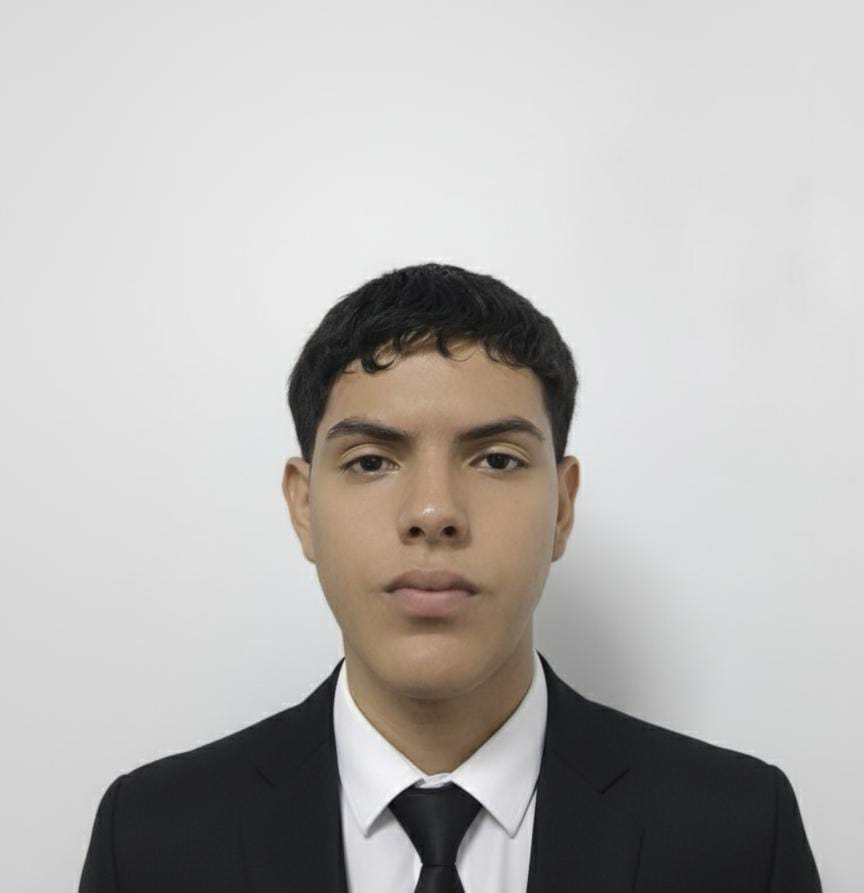

Misión
Nuestra misión es empoderar a los pequeños y medianos emprendedores brindándoles soluciones digitales personalizadas a través del diseño y desarrollo de páginas web funcionales, intuitivas y visualmente atractivas. Nos comprometemos a acompañar de manera cercana a cada cliente durante todo el proceso, desde la concepción de la idea hasta la implementación y el mantenimiento, asegurando que cada sitio refleje fielmente la identidad del negocio. Buscamos facilitar la inclusión digital de quienes no cuentan con conocimientos técnicos, eliminando barreras y creando herramientas accesibles que potencien la visibilidad, conectividad y crecimiento de sus emprendimientos. Creemos en el poder transformador de la tecnología cuando está al servicio de las personas y trabajamos cada día para ser aliados estratégicos en el desarrollo económico y social de nuestras comunidades.
Visión
Aspiramos a ser una empresa referente en el desarrollo de soluciones digitales accesibles para pequeños emprendedores, ofreciendo páginas web personalizadas que no sólo respondan a sus necesidades técnicas, sino que también reflejen su identidad, historia y visión de negocio. Queremos ser reconocidos por nuestra cercanía con el cliente, la calidad de nuestros diseños y el impacto positivo que generamos en las comunidades al facilitar su transformación digital. Imaginamos un futuro donde cada emprendimiento, sin importar su tamaño o recursos, pueda tener presencia en internet de forma profesional, funcional y humana, fortaleciendo así el desarrollo económico local y promoviendo una cultura de inclusión tecnológica y crecimiento colaborativo.
Objetivos Generales
Ayudar a pequeños emprendedores a crecer en el mundo digital mediante la creación de páginas web personalizadas, fáciles de usar y visualmente atractivas, que representen bien su negocio y les permitan conectarse con más personas. Buscamos que estas páginas no solo sirvan como una vitrina para mostrar sus productos o servicios, sino que también se conviertan en una herramienta real para atraer nuevos clientes, generar confianza y mejorar su presencia en internet. Además, queremos brindarles acompañamiento durante todo el proceso, para que se sientan seguros, comprendan cómo funciona su página y puedan aprovecharla al máximo para hacer crecer su emprendimiento.
Objetivos Específicos
- Diseñar y desarrollar páginas web únicas y atractivas para cada cliente, adaptándonos a sus necesidades e identidad de marca.
- Ofrecer un servicio integral que incluya desde la creación de la página web hasta el acompañamiento post-venta, brindando soporte técnico y capacitación al cliente.
- Posicionar nuestra empresa como la opción preferida de los pequeños emprendedores que buscan una solución digital personalizada y accesible.
- Generar un impacto positivo en la comunidad de emprendedores, contribuyendo al crecimiento y desarrollo de sus negocios.
Equipo de Emprendedores
Maria Paula
Solarte Salazar
Programadora enfocada en la organización y la visión estratégica del proyecto.
Isabela Hidalgo
Gil
Programadora y diseñadora del logo, combina creatividad y tecnología en cada detalle.
Cristobal David
Cardona
Desarrollador encargado de la funcionalidad y el rendimiento de nuestras soluciones.
